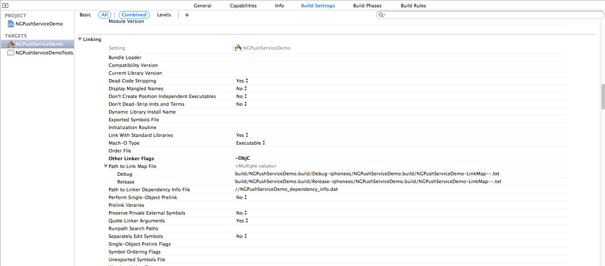
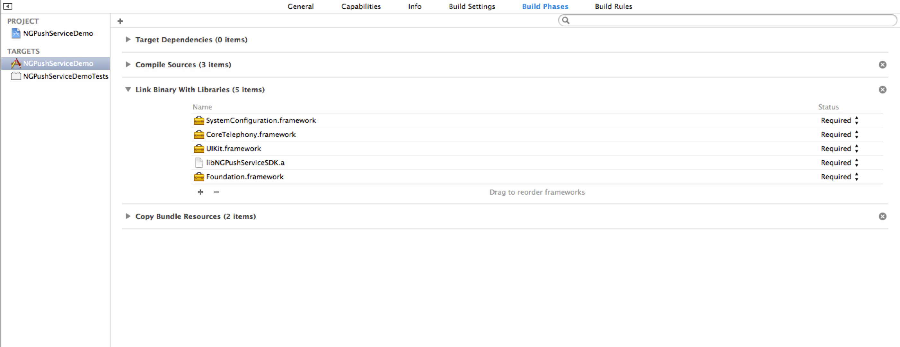
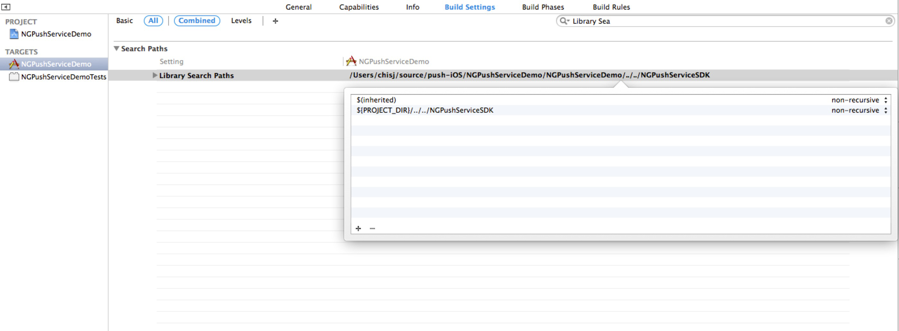

NGPushService iOS SDK 说明文档 V1.0.0
更新履历
| 版本号 | 时间 | 更新内容 |
|---|---|---|
| v1.0.0 | 2014.09.19 | SDK正式版发布 |
1、SDK构成
- 静态库 libNGPushServiceSDK.a, libNGPushServiceSDK-arm64.a
- 头文件: NGPushService.h, NGPushServiceDefines.h
- Demo工程
NGPushService SDK支持armv7、armv7s和arm64架构的iOS设备，iOS要求5.0以上，Xcode要求4.2以上，操作系统要求Mac OS X 10.7以上。
- 如果需要支持arm64，请使用静态库libNGPushServiceSDK-arm64.a
2、项目配置
2.1 添加链接参数
在工程target的"Build Settings"中，找到"Linking"的"Other Linker Flags"，添加参数-ObjC。

2.2 添加Framework
在工程target中添加以下的framework:
SystemConfiguration.framework
CoreTelephony.framework
UIKit.framework

2.3 添加NGPushService
将NGPushServiceSDK文件夹拖入Xcode工程.
在项目target的"build settings"中，找到"Search Paths"的"Library Search Paths", 如果NGPushServiceSDK的路径是绝对路径的，请改为相对路径。 
3、推送SDK使用
3.1 配置推送证书(已经有p12证书的可以跳过这一步)
详见APNS证书创建流程。
3.2 上传推送证书到GameService
- 登录GameService开发者后台；
- 在游戏管理页面，在对应游戏的那一行上点击编辑按钮进入编辑界面；
- 点击开发环境APNS证书打开文件选择框，选择p12证书并上传；
3.3 初始化SDK
AppID和AppKey请到GameService 开发网站后台查看获取，需要先创建App。
初始化需要设置AppID和AppKey：
[NGPushService setAppID:@"10057" AppSecret:@"n6tE8Nr0TRrxkxovOd4btirTyR8J3Ku6"];
3.4 获取并上传device token
请求device token:
[[UIApplication sharedApplication] registerForRemoteNotificationTypes:UIRemoteNotificationTypeBadge | UIRemoteNotificationTypeAlert | UIRemoteNotificationTypeSound];
在UIApplicationDelegate中获取device token，上传到GameService：
- (void)application:(UIApplication *)application didRegisterForRemoteNotificationsWithDeviceToken:(NSData *)deviceToken {
[NGPushService setPushToken:deviceToken]; //上传device token
}
如果无法获取到到device token，请在application:didFailToRegisterForRemoteNotificationsWithError:中查看错误原因：
- (void)application:(UIApplication *)application didFailToRegisterForRemoteNotificationsWithError:(NSError *)error {
NSLog(@"%@", error);
}
4、统计SDK使用
4.1 设置登录玩家ID，在pushToken设置之后，玩家登录完成时调用此接口。如果开发的游戏不存在玩家ID，则设置为"0"
[NGPushService setLoginPlayerID:@"123"];
- 注意，未正确设置pushToken则
setLoginPlayerID:不可用。
4.2 设置渠道ID (可选)
[NGPushService setChannelID:@"91_store" channelName:@"91手机助手"];
- 渠道ID命名可采用英文字母、数字和下划线的组合，例如"360", "91_store", "AppStore"等,在GameService网站中可以给渠道ID添加别名以方便查看
4.3 统计支付
NGPaymentRecord *paymentRecord = [[NGPaymentRecord alloc] init];
paymentRecord.player_id = @"123";
paymentRecord.channel_id = @"91_store"; //渠道ID
paymentRecord.channel_name = @"91手机助手"; //渠道名
paymentRecord.amount = 100; //充值金额，浮点型，精确到小数点后两位
paymentRecord.payment_channel = @"alipay"; //支付渠道，自定义字符串
paymentRecord.currency = @"人民币"; //金额币种，自定义字符串
paymentRecord.coin_amount = 1000; //充值的游戏币
paymentRecord.order_id = @"201409190001"; //订单号，字符串，由游戏客户端定义。
paymentRecord.level = 50; //玩家等级
paymentRecord.server_id = @"AppStore_1"; //服务器ID
paymentRecord.server_name = @"AppStore服务器1"; //服务器名
[NGPushService pay:paymentRecord];
[NGPushService pay:paymentRecord];
- 玩家等级为0-100的数字。
- 服务器ID命令采用英文字母、数字和下划线的组合，例如可以用"91Store_1"表示"91助手1号联运服务器""，"AppStore100"表示AppStore的100号服务器，服务器ID在GameService网站中可以添加别名，方便项目人员查看。
4.4 统计玩家进入某个等级，在玩家升级之后或者登录游戏(在UIApplicationDidBecomeActiveNotification消息处理函数中判断玩家是否登录，登录则调用)之后调用
NGLevelRecord *levelRecord = [NGLevelRecord new];
levelRecord.player_id = @"123";
levelRecord.channel_id = @"91_store"; //渠道ID
levelRecord.channel_name = @"91手机助手"; //渠道名
levelRecord.server_id = @"AppStore_1"; //服务器ID
levelRecord.server_name = @"AppStore服务器1"; //服务器名
levelRecord.player_level = 50; //玩家等级，0-100的数字
[NGPushService reachLevel:levelRecord];
4.5 统计玩家离开某个等级，在玩家升级之前和退出游戏之前调用(在UIApplicationWillResignActiveNotification消息处理函数中判断玩家是否有等级，有等级则调用)
NGLevelRecord *levelRecord = [NGLevelRecord new];
levelRecord.player_id = @"123";
levelRecord.channel_id = @"91_store"; //渠道ID
levelRecord.channel_name = @"91手机助手"; //渠道名
levelRecord.server_id = @"AppStore_1";
levelRecord.server_name = @"AppStore服务器1"; //服务器名
levelRecord.player_level = 50;
[NGPushService leaveLevel:levelRecord];
- reachLevel:和leaveLevel:配合使用，统计玩家在某个等级的在线时间。
4.6 统计玩家进入关卡
NGMissionRecord *missionRecord = [NGMissionRecord new];
missionRecord.player_id = @"123";
missionRecord.channel_id = @"91_store"; //渠道ID
missionRecord.channel_name = @"91手机助手"; //渠道名
missionRecord.server_id = @"AppStore_1";
missionRecord.server_name = @"AppStore服务器1"; //服务器名
missionRecord.mission_id = @"100001"; //关卡id
missionRecord.mission_name = @"第一关：新手村"; //关卡名
[NGPushService enterMission:missionRecord];
- 关卡ID用"100001"到"199999"之间的字符串表示，"100001"表示第1关，依次增加。在GameService网站中可以给关卡添加别名，比如"100001"别名为"第一关"，"100001"别名为“第二关”。
4.7 统计玩家离开关卡，在玩家离开关卡或者退出游戏时调用
NGMissionRecord *missionRecord = [NGMissionRecord new];
missionRecord.player_id = @"123";
missionRecord.channel_id = @"91_store"; //渠道ID
missionRecord.channel_name = @"91手机助手"; //渠道名
missionRecord.server_id = @"AppStore_1";
missionRecord.server_name = @"AppStore服务器1"; //服务器名
missionRecord.mission_id = @"100001";
missionRecord.mission_name = @"第一关：新手村"; //关卡名
[NGPushService leaveMission:missionRecord];
4.8 统计玩家消费行为
NGConsumptionRecord *consumptionRecord = [NGConsumptionRecord new];
consumptionRecord.player_id = @"123";
consumptionRecord.channel_id = @"91_store"; //渠道ID
consumptionRecord.channel_name = @"91手机助手"; //渠道名
consumptionRecord.server_id = @"AppStore_1";
consumptionRecord.server_name = @"AppStore服务器1"; //服务器名
consumptionRecord.item_id = @"11"; //消费的商品ID
consumptionRecord.item_name = @"钻石60个"; //消费的商品名称
consumptionRecord.item_amount = 1; //消费商品数量
consumptionRecord.coin_amount = 100; //话费虚拟币
[NGPushService consumption:consumptionRecord];
4.9 统计玩家剩余虚拟币
NGCoinRecord *coinRecord = [NGCoinRecord new];
coinRecord.player_id = @"123";
coinRecord.channel_id = @"91_store"; //渠道ID
coinRecord.channel_name = @"91手机助手"; //渠道名
coinRecord.server_id = @"AppStore_1";
coinRecord.server_name = @"AppStore服务器1"; //服务器名
coinRecord.coin_amount = 90000; //剩余虚拟币
[NGPushService coin:coinRecord];